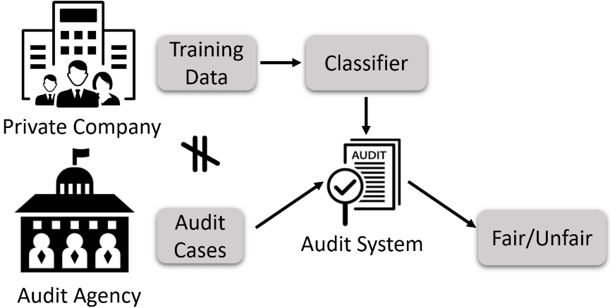
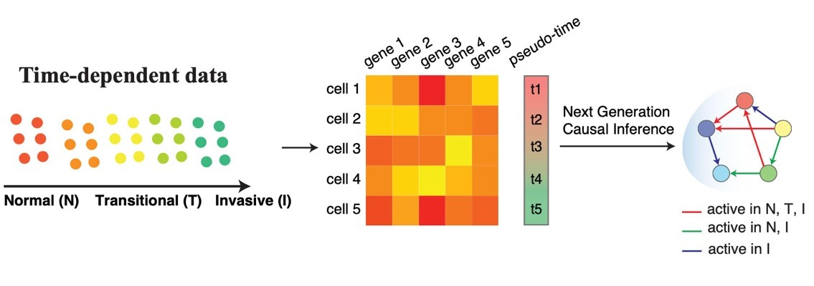
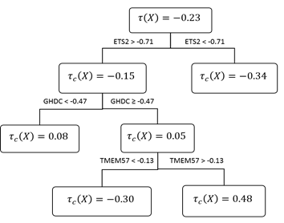

Highlighted Projects
Building competency-aware and assuring machine learning systems. Australian Research Council – Discovery Projects, 2023–2026.
This project aims to develop machine learning systems that are aware of their own competency — able to tell when a case falls outside what they reliably know, explain why, and adapt to unfamiliar situations. Rather than producing a prediction for every input regardless of confidence, competency-aware systems support human–machine partnership in high-stakes decision making by being explanatory and trustworthy. Expected outcomes are new techniques for competency assessment, causal explanation of predictions, and assurance of machine learning systems deployed in critical domains.
Last updated: 2026

Fairness aware data mining methods for discrimination free decision-making. Australian Research Council Discovery Projects, 2021-2023.
Fairness aware data mining for discrimination free decision-making. This project aims to develop data mining methods to detect algorithmic discriminations and to build fair decision models. It expects to provide techniques for regulatory organisations to detect discriminations in algorithmic decisions, and for various companies and organisations to build fair decision systems. Expected outcomes are novel and accurate methods for discrimination detection, practical and versatile techniques for fair decision model building, and improved understanding of the relationships between privacy preservation and discrimination prevention to enable new techniques to achieve both goals. The developed techniques enable society to tackle ethical challenges in the big data era where many decisions are analytics based.
Last updated: Apr 29 - 2022
Big data for strategic transport planning. iMove Collaborative Research Centre, 2021–2023.
This project is an exploratory study that will investigate the ability of different sources of passively-collected transport data to replace traditional household travel survey data as the main input for developing strategic transport models. It will use data from roadside Bluetooth sensors, adaptive traffic control systems, public transport smartcards and vehicle tracking systems, the Australian Census, GIS databases and potentially other data sources in the Greater Adelaide metropolitan region. The project will develop and test algorithms to infer mode-specific origin-destination (O-D) flows within the region, potentially segmented by important travel behaviour information, such as trip purpose and demographic characteristics.
Last updated: Apr 29 - 2022
Satellite image-based smoke detection for bush fire detection. SmartSAT Cooperative Research Centre, 2020–2023.
This project aims to develop practical machine learning technologies which can address the above challenges for smoke detection based on satellite imagery. The technologies are expected to become a new way to address the fire detection problems in vast remote areas. The application of the technologies is hoped to reduce the cost of running remote fire towers, to mitigate the risks on people working at the towers, and to shorten the decision time between the start of the fire and proper reactions taken.
Last updated: Apr 29 - 2022

Next Generation Causal Inference Methods for Biological data – ARC DECRA 2020-2022
Recent advancement in Artificial Intelligence (AI) and statistical machine learning has led to their successful applications in many fields, including biological research. These applications range from predicting the association between genes, i.e. discovering gene regulatory networks, classifying a phenotype using genotypes information, and clustering genes that have similar expression patterns. However, the associations found in data may not imply causation. Although recent advances in causal inference help provide more insight into the understanding of biology, the methods are restricted to learning the causal relationships without considering the changes or dynamics of biological conditions, e.g. discovering the gene regulatory networks for cells that are invasive only. In this project, we would like to understand what are happening during a biological process, e.g. how genes interact with each other during the process that cells transform from normal stage to invasive stage. We also aim to predict in what conditions the biological process of interest will occur and what are the interventions needed to activate/deactivate the biological processes.
Last updated: Apr 29 - 2022

Develop efficient data mining methods for evidence based decision making. Australian Research Council - Discovery Projects, 2017-2021.
Efficient data mining methods for evidence-based decision making. This project aims to develop efficient data mining methods for causal predictions. Evidence-based decision making (EBD), such as evidence-based medicine and policy, is always preferable. To support EBD, causal predictions forecast how outcomes change when conditions are manipulated. Progress has been made in theoretical research on causal inference based on observational data, but few methods can automatically mine causal signals from the data and methods for efficient causal predictions based on data are even fewer. This project will apply its methods to biomedical problems. The outcomes could support smart and data-driven evidence based decision making in many areas, such as therapeutics and government policy making.
Last updated: Apr 29 - 2022
Industry/government funded and international collaborative projects
- Solutions for the optimal use of remotely acquired, high resolution data by the forestry sector, Forestry NIFPI (National Institute for Forest Products Innovation) , 2019-2021.
- PhD Scholarship Entity Linking, Data to Decisions Cooperative Research Centre, 2017-2021.
- Beat the news - building classification and prediction systems for event forecast. Data to Decisions Cooperative Research Centre, 2015-2019.
- Analytics for the Oil and Gas Industry. Santos Limited, 2018-2019.
- PhD Scholarship Discovery and use of Twitter network structure features for civil unrest prediction, Data to Decisions Cooperative Research Centre, 2016-2019.
- Int Policing: Entity Linking & Resolution, Data to Decisions Cooperative Research Centre, 2016–2019.
- Study data mining methods for detecting algorithmic discriminations, UniSA RTIS Seed Funding 2018.
- Forest yield predictions from multi-temporal LiDAR, Forestry South Australia, 2017-2018.
- PhD Scholarship Interpretable classification and prediction of civil unrest events, Data to Decisions Cooperative Research Centre, 2016-2018.
- Entity Linking and Resolution, Data to Decisions Cooperative Research Centre, 2016-2018.
- Predictions of Civil Unrest, Data to Decisions Cooperative Research Centre, 2015-2018.
- Economic Complexity Analysis, South Australia Department of Innovation and Skills, 2016–2017.
- Online Monitoring Guidance Manual Incorporating Decision Support Tools for Superior Process Performance WRA Project Number: 1075-13, Water Research Australia, 2014–2017.
- Online Monitoring Guidance Manual Incorporating Decision Support Tools for Superior Process Performance, Water Research Australia, 2015-2016.
- Boosting security and efficiency in recommender systems. National Research Fund Luxembourg, 2014-2017.
- An Economic Complexity analysis of Australia's states, South Australia Department for Innovation and Skills, 2014–2015.
- Optimisation of existing instrumentation to achieve better process performance. Water Research Australia, 2014-2015.
- Development of Smart data analytics tools to improve treatment performance assessment. SA Water, 2014.
- XML Views of Relational Databases: Semantics and Update Problems, ARC Discovery Project, 2008-2010.
- Discovery of semantic constraints for data quality purpose, Division CGD grant, 2008.
- Constraints in XML Data Integration, Australian Research Council Discovery Projects, 2005-2007.
- Normalizing XML Documents, Australian Research Council Discovery Projects, 2006.
- UniSA grant for Closely Missed Australian Research Council Discovery Projects application, UniSA, 2005.
- Funding under the Early Career Research Supported Researcher Scheme, 2003-2005.
- XML functional dependency representation and checking, ACRC internal grant, 2002-2003.
- XML data integration, ACRC internal grant, 2002-2003.
- Division small grant for “Update XML views”, UniSA, 2000-2001.
National competitive grant funded projects
- Develop efficient data mining methods for evidence based decision making, Australian Research Council - Discovery Projects, 2017-2021.
- Efficient causal discovery from observational data, Australian Research Council Discovery Projects, 2014–2017.
- Developing novel data mining methods to reveal complex group relationships from heterogeneous data, Australian Research Council Discovery Projects, 2013-2016.
- Studying privacy protection methods for multiple independent data releases, Australian Research Council Discovery Projects, 2011-2014.
- Data mining of learning behaviours and interactions for improved sentiment and performance, Office for Learning and Teaching Grants - Innovation & Development, 2013–2015.
- Confidential document sharing by automatic document sanitization, Australian academy of science Australia-India Strategic Research Fund, 2012-2013.